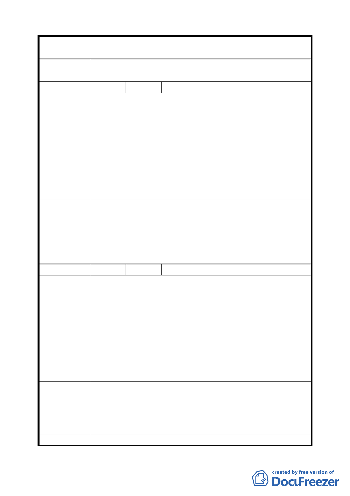

案 名 臺北市文山區都市計畫通盤檢討（主要計畫）案
委員會議
決議
依專案小組審查結論辦理。
編 號 ３２ 陳情人 國立政治大學（09430082700）
建議位置：老泉段一小段 141、142、143、144 地號，面積
3864 平方公尺。
建議理由：
陳 情 理 由 一、張家古厝因民國 80 年間政大後山地滑事件，原宅第已
（政大）
毀，祭祀公業派下員有意出售土地予本校並欲藉本次通
檢時機向市府提出變更用地請求。
二、該等地號土地為本校用地所包夾，進出使用不便，且有
礙本校山上校區整體發展利用。
建議辦法
一、保護區變更為政治大學用地。
二、都市計畫確定後由本校依規定辦理價購或徵收。
專案小組
審查結論
（94.7.11）
本案同意政治大學之提案，惟攸關地主產權之處理，國立政
治大學仍須協調地主之意願，再提送市府都市發展局據以辦
理變更為「大學用地（供政治大學使用）」，仍須依法辦理都
市計畫變更程序。
委員會議
決議
依專案小組審查結論辦理。
編 號 ３３ 陳情人 國立政治大學（09430082700）
建議位置：老泉段一小段 215、223 地號二筆土地，約 1213
平方公尺。
建議理由：
一、本校經管且實際作校園使用之土地（215 地號）及木柵
陳情理由
農會經管實際作校園使用之土地（223 地號），基於管用
（政大）
合一及實際狀況考量，提請變更。
二、另查糧倉區之設置緣起為「儲存公糧」並將本校原使用
之土地予以變更，茲以時移勢遷及校園整體發展利用考
量，建請通盤考量將糧倉區全部變更回學校用地之可行
性。
建議辦法
一、糧倉區（215 及 223 地號）變更為政治大學用地。
二、都市計畫確定後由本校依規定辦理價購或徵收。
專 案 小 組 維持原計畫。
審 查 結 論 附帶決議：請發展局協調政治大學、木柵農會，以善意互助
（94.12.21）
的精神提出適當方案後，另案依法辦理。
委員會議
二一